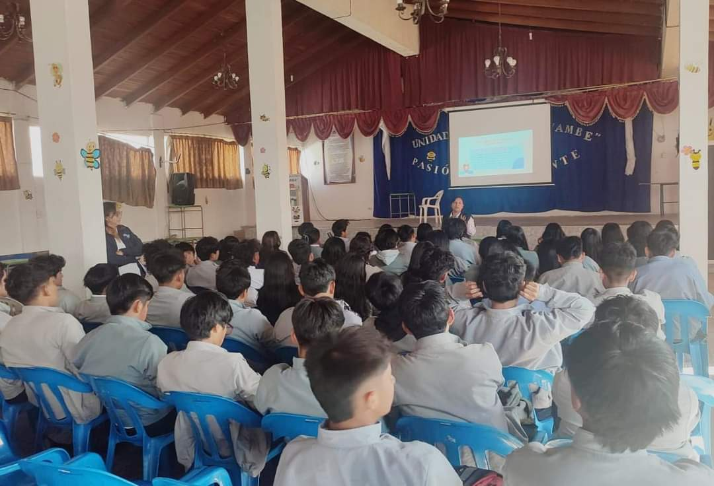

DECE
Se encarga de velar por el bienestar de los estudiantes,apoya el crecimiento emocional y social ayudándolos a:
Ser más conscientes de sus emociones.
Desarrollar habilidades para manejar situaciones difíciles.
Fortalece su salud mental y bienestar.
Manejar el estrés y la ansiedad.
Desarrollar autoestima y confianza.
Aprender a expresar emociones de manera saludable
Es un recurso valioso para los estudiantes, docentes, familias.
DOCENTES
Marcelo López
Gloria Galarza
